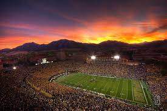

Table of Contents
History
Beginning in 1890, the Buffaloes have appeared in 29 bowl games (36th all-time), and won 27 conference championships, 5 division championships and an AP national championship in 1990. Folsom Field was built in 1924, and since then, Colorado has a 308–169–14 record at home through the 2016 season. The road game against the Nebraska Cornhuskers on November 24, 2006, was Colorado's 1,100th football game. The game on September 12, 2015, against Massachusetts was the school's 1,200th football game.
Conference Affiliations
- Independent (1890–1892, 1905)
- Colorado Football Association (1893–1904, 1906–1908)
- Colorado Faculty Athletic Conference (1909)
- Rocky Mountain Faculty Athletic Conference (1910–1937)
- Mountain States Conference (1938–1947)
- Big Eight Conference (1948–1995)
- Big 12 Conference (1996–2010, starting 2024)
- Pac-12 Conference (2011–present)
Championships
National Championships
Colorado won one national championship in football for 1990.
Head Coaches
The Buffaloes have played in 1,109 games during their 125 seasons, through 2014. In those seasons, 11 coaches have led Colorado to postseason bowl games: Bunny Oakes, Dallas Ward, Marcel M. Mazur, Bud Davis, Eddie Crowder, Bill Mallory, Bill McCartney, Rick Neuheisel, Gary Barnett, Dan Hawkins, Mike MacIntyre and Karl Dorrell.[8] Ten coaches have won conference championships with the Buffaloes: Fred Folsom, Myron Witham, William Saunders, Oakes, Jim Yeager, Sonny Grandelius, Mallory, McCartney and Barnett. The Buffaloes won the national championship in 1990, and have won a total of 28 conference championships. McCartney is the all-time leader in games coached with 153, total wins with 93, and conference wins with 58.[9] Folsom had the longest tenure as head coach, remaining in the position for 15 seasons. Harry Heller and Willis Keinholtz are tied for the highest overall winning percentage. Each served a single season and won eight of his nine games for a winning percentage of .889. Of coaches who served more than one season, Folsom leads with a .765 winning percentage. Davis, in terms of overall winning percentage, is the worst coach the Buffaloes have had with a .200 winning percentage. No Colorado coach has been inducted into the College Football Hall of Fame, although McCartney was inducted into the Orange Bowl Hall of Fame in 1996. Mike MacIntyre had brief success with the program. Hired on Dec. 10, 2012,[10] MacIntyre compiled a 30–44 record over five-plus seasons at Colorado. In 2016, MacIntyre lead Colorado to a 10-2 regular season and a trip to the Pac-12 Championship Game. It was the first winning season for Colorado since 2005, ending a 10-year streak of finishing below .500. 2016 was also the best season for the Buffaloes since 2001. As well, it marked their first time playing in a conference championship game since the 2005 Big 12 Championship Game. The team also went 8–2 in the Pac-12 after having five conference wins in the previous five seasons. Mike MacIntyre was named the Walter Camp 2016 Coach of the Year by the Walter Camp Foundation, the second Colorado football coach to earn the honor (Bill McCartney in 1989). MacIntyre was also awarded the 2016 Pac-12 Coach of the Year, American Football Coaches Association's coach of the year and comeback coach of the year awards, the Associated Press coach of the year, and the Eddie Robinson coach of the year by the Football Writers Association of America. In 2018, the Buffaloes started out the season 5–0 with wins against rivals Colorado State, Nebraska, Arizona State, and UCLA - however, MacIntyre was fired as the head coach on November 18, 2018, after a six-game losing streak.[11] Mike Sanford was named interim Head Coach after Karl Dorrell was fired during the 2022 season, Sanford was previously the Buffaloes Offensive Coordinator for the start of the 2022 campaign.[12] On December 3, Colorado announced Deion Sanders as Head Football Coach.[13]
Venues
- Campus fields (1890–1901)
- Gamble Field (1901–1924)
- Folsom Field (1924–present)